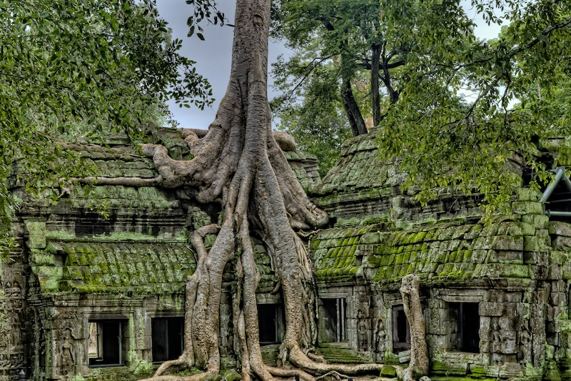
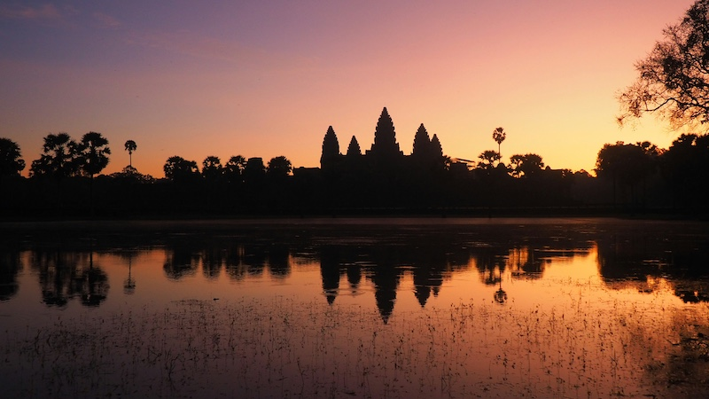
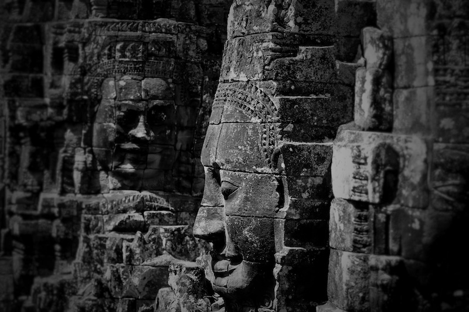
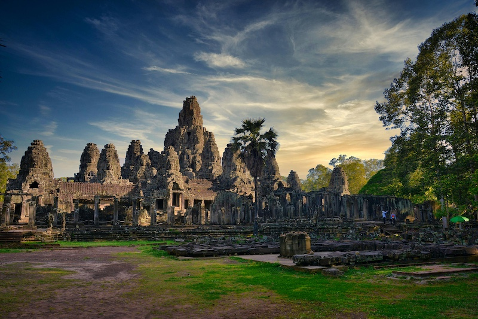

Siem Reap Angkor
Siem Reap Angkor is a beautiful and historic city in Cambodia. It is known for its ancient temples, food, and culture. Fun fact: Angkor Wat temple is four times larger than the Vatican City in area.
Taprom Temple, Photo by James Wheeler on Unsplash
Sun Set over Angkor Wat Temple, Photo by Daf Jones on Unsplash
Angkor Thom Grayscale Photo of Buddha Statues Photo by A D from Pexels
Bayon Temple under Blue Cloudy Sky, Photo by allPhoto Bangkok from Pexels